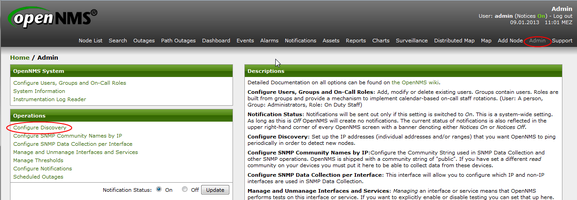
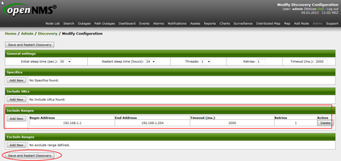
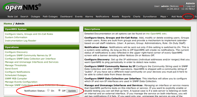
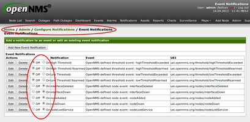
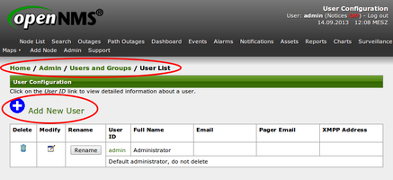
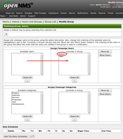

OpenNMS
Dieser Artikel wurde für die folgenden Ubuntu-Versionen getestet:
Ubuntu 14.04 Trusty Tahr
Artikel für fortgeschrittene Anwender
Dieser Artikel erfordert mehr Erfahrung im Umgang mit Linux und ist daher nur für fortgeschrittene Benutzer gedacht.
Zum Verständnis dieses Artikels sind folgende Seiten hilfreich:
OpenNMS  ist ein freies Netzwerkmanagement-System zur Überwachung von IT-Netzwerken. Der gesamte Code steht unter der GNU General Public License (GPL). Verwaltet wird das Projekt von Tarus Balog, der OpenNMS Group und „The Order of the Green Polo“. OpenNMS ist in Java geschrieben und lässt sich über eine Weboberfläche benutzen. Es gilt als sehr skalierbar. Installationen zur Überwachung von 70.000 Systemen mit einer Instanz sind in der Praxis im Einsatz.
ist ein freies Netzwerkmanagement-System zur Überwachung von IT-Netzwerken. Der gesamte Code steht unter der GNU General Public License (GPL). Verwaltet wird das Projekt von Tarus Balog, der OpenNMS Group und „The Order of the Green Polo“. OpenNMS ist in Java geschrieben und lässt sich über eine Weboberfläche benutzen. Es gilt als sehr skalierbar. Installationen zur Überwachung von 70.000 Systemen mit einer Instanz sind in der Praxis im Einsatz.
Kernfunktionen:
Discovery: Im Netzwerk zu überwachende Knoten (Geräte) und darauf laufende Dienste können automatisch durch einen Discovery-Prozess erkannt werden.
Service Polling: Die auf den Knoten erkannten Dienste werden über ein Polling-Verfahren überwacht.
Datacollection: In regelmäßigen Abständen können Leistungsdaten der einzelnen Knoten per SNMP, JMX, HTTP, WMI, JDBC und NSClient erhoben werden.
Thresholding: Die gesammelten Leistungsdaten können mittels Schwellwerten überwacht werden.
Event Management: Umfasst die Verwaltung von internen sowie externen Ereignissen, die unter anderem per SNMP-Trap oder Syslog empfangen werden können.
Benachrichtigungen: Benachrichtigungen über sämtliche Ereignisse (wie zum Beispiel ein ausgefallener Dienst oder Knoten) sind unter anderem per E-Mail oder XMPP möglich.
Aufbau¶
OpenNMS besteht aus mehreren Diensten, die jeweils über einen gemeinsamen Eventbus miteinander kommunizieren. Der Discovery-Daemon durchsucht in regelmäßigen konfigurierbaren Abständen IP-Adressbereiche nach neuen Knoten. Wird ein neuer Knoten erkannt, wird ein NewSuspect-Ereignis erzeugt. Nach dem Auftreten eines solchen Ereignisses beginnt der Dienst Capsd die auf dem Gerät verfügbaren Dienste zu erkennen und in OpenNMS aufzunehmen. Der Pollerd übernimmt anschließend das Abfragen der einzelnen erkannten Dienste während der Collectd in regelmäßigen Abständen Leistungsdaten wie zum Beispiel die CPU-Auslastung unter anderem per SNMP erhebt. Mit den Diensten Trapd und Syslogd können SNMP-Traps sowie Syslog-Nachrichten empfangen werden und dem jeweiligen überwachten Knoten zugeordnet werden. Sämtliche Daten mit Ausnahme von Leistungsdaten werden in einer PostgreSQL-Datenbank gespeichert. Leistungsdaten werden in RRD-Dateien abgelegt. Mit einem Applikationsserver werden die gesammelten Informationen dem Benutzer über eine Weboberfläche zur Verfügung gestellt.
Voraussetzungen¶
Java¶
OpenNMS basiert auf Java. Empfohlen wird die Installation einer Entwicklungsumgebung (JDK, Version 7). OpenNMS funktioniert sowohl mit OpenJDK als auch mit Java/Oracle Java.
PostgreSQL¶
Dann muss PostgreSQL installiert [1] werden:
postgresql
 mit apturl
mit apturl
Paketliste zum Kopieren:
sudo apt-get install postgresql
sudo aptitude install postgresql
Danach müssen die Zugriffsberechtigungen der Datenbank geändert werden. Die Datei /etc/postgresql/VERSION/main/pg_hba.conf muss mit einem Editor [2] und Root-Rechten [3] bearbeitet werden. Am Ende der Datei gibt es die Einträge:
local all all ident sameuser host all all 127.0.0.1/32 ident sameuser host all all ::1/128 ident sameuser
Diese bitte abändern:
local all all trust host all all 127.0.0.1/32 trust host all all ::1/128 trust
Hinweis:
Die oben genannten Änderungen in der Konfiguration erlauben jedem Zugriff auf die Datenbank, der sich auf localhost (also dem OpenNMS Server) anmelden darf! Diese Konfiguration ist für die Installation von OpenNMS am unkompliziertesten. In den meisten Fällen sollte dies allerdings kein Sicherheitsrisiko darstellen, da der Server sowieso nicht offen für jeden zugänglich sein sollte. Weiter unten in der Konfig wird erklärt, wie der Postgres Zugriff abgesichert werden kann.
Danach die Server-Komponente von PostgreSQL neu starten:
sudo service postgresql restart
Installation¶
OpenNMS ist nicht über die offiziellen Ubuntu Paketquellen verfügbar. Daher muss man die Paketquelle manuell hinzufügen.
Fremdquelle¶
Um aus der Fremdquelle zu installieren, muss man unabhängig von der Ubuntu-Version die folgende Paketquelle freischalten:
Hinweis!
Zusätzliche Fremdquellen können das System gefährden.
deb http://debian.opennms.org stable main
Um die Fremdquelle zu authentifizieren, kann man
entweder den Signierungsschlüssel herunterladen  und in der Paketverwaltung hinzufügen oder folgenden Befehl ausführen:
und in der Paketverwaltung hinzufügen oder folgenden Befehl ausführen:
wget -q http://debian.opennms.org/OPENNMS-GPG-KEY -O- | sudo apt-key add -
Nach dem Aktualisieren der Paketquellen kann das Paket opennms installiert werden:
sudo apt-get update sudo apt-get install opennms -y
Konfiguration¶
Danach muss OpenNMS gesagt werden, wo es Java findet bzw. welches es nutzen soll:
sudo /usr/share/opennms/bin/runjava -S /PFAD/ZU/JAVA/bin/java
Nun noch schnell die OpenNMS Datenbank erstellen. Dazu gibt es ein Installationsprogramm von OpenNMS. Dieses muss auch nach Updates erneut ausgeführt werden.
sudo /usr/share/opennms/bin/install -dis
Absichern von Postgres¶
Wie schon erwähnt, kann nun der Zugriff auf die Postgres Datenbank abgesichert werden. Den Datenbankbenutzern postgres und opennms muss ein Passwort zur Authentifizierung gegeben werden (siehe auch daviCAL). Dazu zuerst den Benutzer wechseln [4][5] und die Datenbankverwaltung starten:
1 2 | su - postgres psql |
Am PostgreSQL-Prompt postgres=# folgende Befehle eingeben:
ALTER USER opennms with password 'geheim'; ALTER USER postgres with password 'geheim'; \q
Dann wieder zum normalen Benutzer werden:
1 | exit
|
Nun muss OpenNMS das Passwort bekannt gegeben werden. In der Datei /etc/opennms/opennms-datasources.xml kann dieses hinterlegt werden:
1 2 3 4 5 6 7 8 9 10 11 12 13 | <jdbc-data-source name="opennms" database-name="opennms" class-name="org.postgresql.Driver" url="jdbc:postgresql://localhost:5432/opennms" user-name="opennms" password="geheim" /> <jdbc-data-source name="opennms-admin" database-name="template1" class-name="org.postgresql.Driver" url="jdbc:postgresql://localhost:5432/template1" user-name="postgres" password="geheim" /> |
Die Datei /etc/postgresql/VERSION/main/pg_hba.conf kann jetzt von trust auf md5 geändert werden. Der Zugriff auf PostgreSQL ist dann über lokale Unix sockets sowie local loopback über IPv4 und IPv6 nur mit MD5 verschlüsselter Authentifizierung möglich.
local all all md5 host all all 127.0.0.1/32 md5 host all all ::1/128 md5
Damit die Änderung wirksam wird, muss PostgreSQL neu gestartet werden:
sudo service postgresql restart
Danach ist OpenNMS einsatzbereit. Es muss nur noch gestartet werden:
sudo service opennms start
Erste Schritte¶
Benutzeroberfläche¶
Der Zugriff erfolgt über den Browser: http://OPENNMS-IP-ADRESSE:8980/opennms/
Benutzername: admin Passwort: admin
Discovery¶
Um großflächig Nodes in die OpenNMS Datenbank zu bekommen, sollte man den Discovery Daemon konfigurieren. Dies lässt sich leicht über die grafische Oberfläche einstellen.
|  |
| Administrations-Weboberfläche |
|  |
| Discovery-Konfiguration |
Einfach eine gewünschte IP, IP-Bereich oder URL eingeben und auf "Save and Restart Discovery" klicken. In der "Node List" werden dann alle Geräte erscheinen, die per ICMP im Netzwerk erreichbar sind. Diese werden auch fortan auch auf ICMP und div. andere Dienste, die dort erkannt werden (wie. z.B. HTTP, SSH usw.), überwacht.
Notifications¶
OpenNMS bietet viele Möglichkeiten, um Nachrichten zu versenden. Meist werden Emails oder Instant Messages verwendet. Aber auch SMS, Anrufe oder Mikrobloggingdienste könnten genutzt werden. Der Versand von Nachrichten ist grundlegend bei einer Neuinstallation ausgeschaltet. Das heißt aber nicht, dass OpenNMS nichts meldet! Denn die Nachrichten sind im Menü Notifications ersichtlich. Sie werden nur nicht per Mail etc. versendet.
In der Datei /etc/opennms/javamail.configuration.properties muss der gewünschte Emailserver hinterlegt sein. Eine funktionierende Konfiguration könnte z.B. so aussehen (wenn der SMTP Server keine Authentifizierung benötigt):
org.opennms.core.utils.fromAddress=EMAILADRESSE-DES-NMS-SERVER org.opennms.core.utils.mailHost=IP-DES-MAIL-SERVER org.opennms.core.utils.mailer=smtpsend org.opennms.core.utils.transport=smtp org.opennms.core.utils.smtpport=25 org.opennms.core.utils.useJMTA=false org.opennms.core.utils.messageContentType=text/html org.opennms.core.utils.encoding=8-bit org.opennms.core.utils.charset=utf8 org.opennms.core.utils.contentTransferEncoding=8-bit
Diese Konfiguration benötigt einen Neustart von OpenNMS.
service restart opennms
Der Versand von Nachrichten kann im Bereich Admin eingeschaltet werden:
|  |
| Notifications einschalten |
Im Adminbereich unter Home / Admin / Configure Notifications / Event Notifications können einzelne Nachrichten ein- oder ausgeschaltet werden. In der Grundinstallation sind folgende Benachrichtigungen enthalten:
High/Low Threshold - Wird ausgelöst, wenn ein überwachter Wert über/unterschritten wird
InterfaceDeleted - Wird ausgelöst, wenn ein Interface eines überwachten Gerätes gelöscht wird
InterfaceDown - Wird ausgelöst, wenn ein Interface eines überwachten Gerätes nicht mehr erreichbar ist.
NodeAdded - Wird ausgelöst, wenn ein zu überwachendes Gerät in OpenNMS hinzugefügt wird
NodeDown - Wenn ein komplettes überwachtes Gerät nicht mehr erreichbar ist
NodeLostService - Wenn ein Dienst eines überwachten Gerätes nicht mehr erreichbar ist. Z.B. HTTP oder SSH
|  |
| Event notifications |
Um nun auch diese Nachrichten per Email zu erhalten, muss man sich einen Benutzeraccount anlegen und diesen in die Gruppe admin hinzufügen.
Hinweis:
Da die Standardbenachrichtigungen auf die Gruppe admin eingestellt sind, ist es für den ersten Schritt (um Ergebnisse zu erzielen, sprich, Emails zu bekommen) einfacher sich in die Gruppe admin hinzuzufügen, als die ganzen Notifications neu zu konfigurieren. In einem größeren Szenario muss dies natürlich überarbeitet werden.
Der User benötigt nur einen Benutzernamen, Passwort und eine Emailadresse. Er kann im Adminbereich Home / Admin / Users and Groups / User List erstellt und in Home / Admin / Users and Groups / Group List der Gruppe admin hinzugefügt werden.
|  |
| Menü für Usererstellung |
|  |
| Gruppenmitglieder definieren |
Backup / Restore¶
Die Sicherung von OpenNMS besteht aus 4 Komponenten. Mit diesen vier Teilen kann man eine Neuinstallation von OpenNMS wieder auf seinen letzten Stand zurück bringen.
Datenbank¶
In der PostgreSQL Datenbank stehen z.B. alle Events, Notifications, Alarme etc. Mit dem Programm pg_dump, welches Teil des postgres-Paketes ist, kann eine Sicherung erstellt werden.
pg_dump -U opennms -Fc -f /backups/opennms-pgsql.gz opennms
Der Restore dazu sieht so aus:
createdb -U opennms opennms pg_restore -U opennms -Fc -d opennms /backups/opennms-pgsql.gz
RRD Archive¶
Sie enthalten die gespeicherten Leistungsdaten aller überwachten Geräte. Die RRD Archive sind in dem Ordner /usr/share/opennms/share/rrd zu finden. Zur Sicherung genügt eine Kopie des Ordners.
Hinweis:
Je nach Umgebung kann dieser Ordner sehr groß werden! Daher empfiehlt es sich den Inhalt zu komprimieren.
tar -cvzf /backups/opennms-rrd.tar.gz /usr/share/opennms/share/rrd
Konfiguration¶
Die Konfigurationen liegen unter /etc/opennms/. Auch dieser Ordner muss nur kopiert bzw. archiviert werden.
tar -cvzf /backups/opennms-etc.tar.gz /etc/opennms
Webinterface¶
Die Konfigurationen für das Webfrontend findet man im Ordner /usr/share/opennms/jetty-webapps. Falls man das Webfrontend modifiziert hat, sollte man auch diesen Ordner sichern.
tar -cvzf /backups/opennms-jetty.tar.gz /usr/share/opennms/jetty-webapps
Problembehandlung¶
Logs¶
Die Protokolldateien (Logs) werden unter /var/log/opennms/daemon/ gespeichert. In der Datei /etc/opennms/log4j2.xml kann das Loglevel angepasst werden. Die meisten Daemons sind standardmäßig auf WARN eingestellt. Es kann, gerade bei der Fehlersuche in der Konfiguration, hilfreich sein, mehr Meldungen zu erhalten. Das Loglevel sollte dann auf INFO oder DEBUG gestellt werden.
1 2 | # Pollers log4j.category.OpenNMS.Poller=WARN, POLLERS |
Diese Änderung wird sofort gültig und die Logs werden mit Debug Informationen gefüllt.

 Programmübersicht
Programmübersicht- Erstellt mit Inyoka
-
 2004 – 2017 ubuntuusers.de • Einige Rechte vorbehalten
2004 – 2017 ubuntuusers.de • Einige Rechte vorbehalten
Lizenz • Kontakt • Datenschutz • Impressum • Serverstatus -
Serverhousing gespendet von